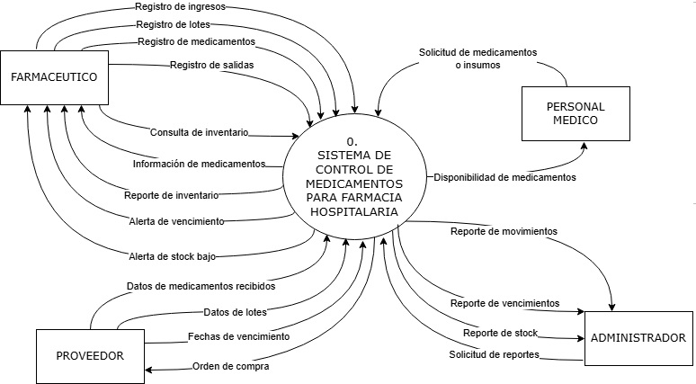

Analisis y diseño Estructurado
Modelo Ambiental
9.1 Declaración de Propósito
El propósito del Sistema de Control de Medicamentos para Farmacia Hospitalaria es automatizar y optimizar la gestión de la farmacia hospitalaria del Hospital Los Pinos. El sistema tiene como objetivo principal garantizar un control riguroso sobre el inventario, el registro de lotes y el seguimiento de fechas de vencimiento para minimizar pérdidas económicas y mejorar la seguridad del paciente. El sistema busca transformar los procesos manuales actuales en una gestión tecnológica eficiente que apoye la toma de decisiones administrativas y fortalezca el control, a través de la implementación de alertas automáticas para niveles bajos de stock y productos próximos a expirar,
9.2 Diagrama de Contexto

9.3 Lista de Acontecimientos
- El farmacéutico registra un nuevo medicamento en el sistema, por lo que el sistema almacena la información correspondiente y la incorpora al inventario.
- El farmacéutico registra un nuevo lote de medicamentos, por lo que el sistema guarda los datos del lote y los asocia al medicamento correspondiente.
- El farmacéutico registra el ingreso de medicamentos al almacén, por lo que el sistema actualiza las existencias e incrementa el stock disponible.
- El farmacéutico registra la salida o dispensación de medicamentos, por lo que el sistema descuenta las cantidades entregadas y actualiza el inventario.
- El farmacéutico realiza una consulta de inventario, por lo que el sistema proporciona información actualizada sobre existencias, lotes y fechas de vencimiento.
- El personal médico solicita medicamentos o insumos, por lo que el sistema verifica y muestra la disponibilidad de los productos requeridos.
- El administrador solicita reportes de control, por lo que el sistema genera reportes de stock, movimientos y vencimientos de medicamentos.
- El proveedor entrega información de medicamentos recibidos, por lo que el sistema registra los datos correspondientes para su control y seguimiento.
- El proveedor proporciona información de los lotes entregados, por lo que el sistema registra los datos necesarios para el control de trazabilidad.
- El proveedor proporciona las fechas de vencimiento de los medicamentos entregados, por lo que el sistema almacena esta información para su posterior monitoreo.
- Cuando un medicamento se encuentra próximo a vencer, el sistema genera automáticamente una alerta de vencimiento para el farmacéutico.
- Cuando el stock de un medicamento alcanza el nivel mínimo establecido, el sistema genera automáticamente una alerta de stock bajo para informar al farmacéutico.
- Cuando se requiere reabastecer medicamentos, el sistema genera una orden de compra que es enviada al proveedor correspondiente.